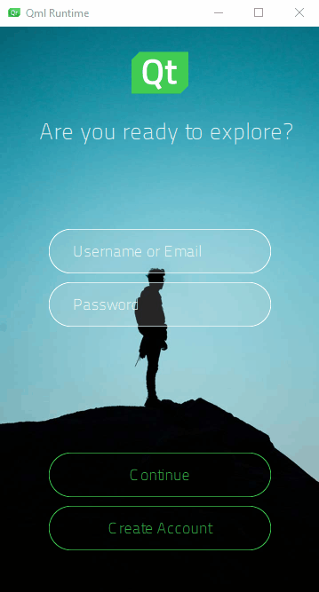

Log In UI - States
Illustrates how to use states to create a second UI page.

Log In UI - States is the third in a series of tutorials that build on each other to illustrate how to use Qt Design Studio to create a simple UI with some basic UI components, such as pages, buttons, and entry fields. The third tutorial in the series describes how to use states to add a second page to the UI. On the first page, users can enter a username and password to log in. On the second page, they can register if they do not already have an account.
Because the second page will contain most of the same UI components as the login page, you will use states to show and hide UI components as necessary when a user selects the Create Account button.
The starting point for this tutorial is the completed Log In UI - Positioning project. You can download the project from here.
Additionally, you can download the completed project of this tutorial from here.
The Learn More sections provide additional information relevant to the task at hand.
Adding UI Components
You will add another entry field for verifying the password that users enter to create an account. You are already familiar with the tasks in this section from previous parts of the tutorial.
To preview the changes that you make to the UI while you make them, select the  (Show Live Preview) button on the 2D view toolbar or press Alt+P.
(Show Live Preview) button on the 2D view toolbar or press Alt+P.
To add the entry field needed on the second page to the Screen01 component:
- Double-click Screen01.ui.qml in Projects to open it in the 2D view.
- Drag-and-drop an instance of the EntryField component from Components > My Components to fields in Navigator.
- Select the EntryField instance in Navigator to modify its ID and text in Properties.
- In Component > ID, enter repeatPassword.
- In Button Content > Text, enter Repeat Password and select tr to mark the text translatable.
- Select File > Save or press Ctrl+S to save your changes.
Screen01 should now look something like this in the 2D view:
Next, you will add states for the login page and the account creation page, where you use the visibility property to hide the repeat password field on the login page and the Create Account button on the account creation page.
Using States to Simulate Page Changes
You will now add states to the UI to show and hide UI components in the 2D view, depending on the current page:
- In the States view, select
 .
. - Enter login as the state name.

- Select repeatPassword in Navigator to display its properties in Properties.
- In the Visibility section, deselect the Visible check box to hide the repeat password field in the login state.
- In States, select
 for login to open the Actions menu, and then select Set as Default to determine that the login state is applied when the application starts.
for login to open the Actions menu, and then select Set as Default to determine that the login state is applied when the application starts. - With the base state selected, add another state and name it createAccount. This state should now look identical to the base state.
- Select createAccount in the Navigator to display its properties in Properties.
- In Visibility, deselect the Visible check box to hide the Create Account button in the account creation state.
- Select File > Save or press Ctrl+S to save your changes.
You can now see all the states in the States view:
The live preview displays the default state, login:
Next, you will create connections to specify that clicking the Create Account button on the login page triggers a transition to the account creation page.
Connecting Buttons to States
Components have predefined signals that are emitted when users interact with the UI. The PushButton component contains a Mouse Area component that has a clicked signal. The signal is emitted whenever the mouse is clicked within the area.
You will now use the Connections view to connect the clicked signal of the createAccount button to createAccount state:
- Select View > Views > Connections to open the Connections view.
- Select createAccount in Navigator.
- In the Connections tab, select the button to open the connection setup options.
- Set Signal to
clicked, Action toChange State, State Group torectangleand State tocreateAccountin the respective drop-down menus. - Select the
 button to close the connection setup options.
button to close the connection setup options. - Select File > Save or press Ctrl+S to save your changes.
Note: Or, you can right-click the createAccount button in Navigator. Then select Connections > Add signal handler > clicked > Change State to createAccount.
In the live preview, you can now click the Create Account button to go to the account creation page.
Learn More
States
The state of a particular visual component is the set of information which describes how and where the individual parts of the visual component are displayed within it, and all the data associated with that state. Most visual components in a UI will have a limited number of states, each with well-defined properties.
For example, a list item may be either selected or not, and if selected, it may either be the currently active single selection or it may be part of a selection group. Each of those states may have certain associated visual appearance (neutral, highlighted, expanded, and so on).
Youn can apply states to trigger behavior or animations. UI components typically have a default state that contains all of a component's initial property values and is therefore useful for managing property values before state changes.
You can specify additional states by adding new states. Each state within a component has a unique name. To change the current state of an component, the state property is set to the name of the state. State changes can be bound to conditions by using the when property.
Signal and Event Handlers
UI components need to communicate with each other. For example, a button needs to know that the user has clicked on it. In response, the button may change color to indicate its state and perform an action.
To accomplish this, a signal-and-handler mechanism is used, where the signal is the event that is responded to through a signal handler. When a signal is emitted, the corresponding signal handler is invoked. Placing logic, such as a script or other operations, in the handler allows the component to respond to the event.
For more information, see Signal and Handler Event System.
Next Steps
For a more complicated UI, you would typically use components that specify a view of items provided by a model, such as a List View or StackView. For more information, see Lists and Other Data Models.
To learn how to use a timeline to animate the transition between the login and account creation pages, see the next tutorial in the series, Log In UI - Timeline.
Files: